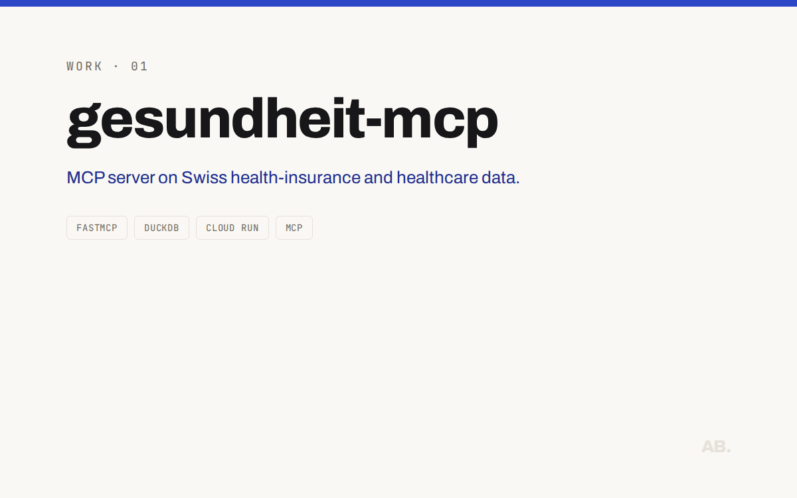

Work · 01
gesundheit-mcp
MCP server on Swiss health-insurance and healthcare data.

- Stack
- FastMCP, DuckDB ETL, Docker, Google Cloud Run; provenance per observation; guarded SQL escape hatch
- Built
- September 2026
- Endpoint
https://gesundheit-mcp-17797849230.europe-west6.run.app/mcpThis is an MCP endpoint for MCP clients, not a page to open in a browser.